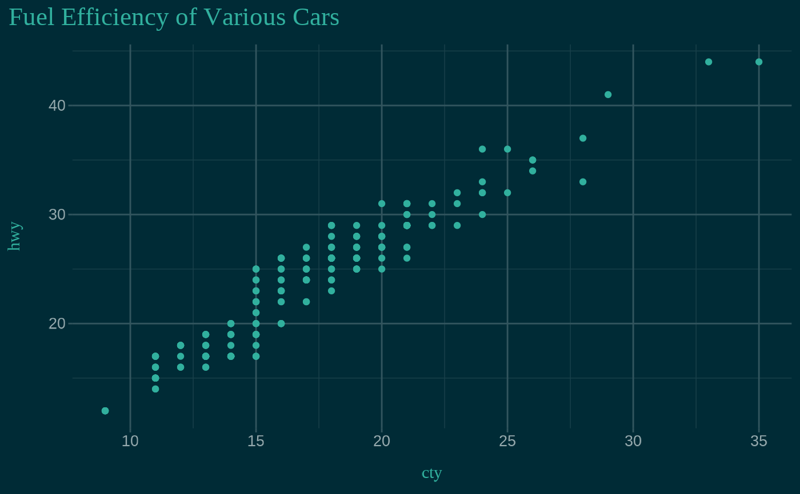

![[Maturing]](figures/lifecycle-maturing.svg)
Creates ggplot2 themes to match the xaringanthemer theme used in the
xaringan slides that seamlessly matches the "normal" slide colors and
styles. See vignette("ggplot2-themes") for more information and examples.
Usage
theme_xaringan(
text_color = NULL,
background_color = NULL,
accent_color = NULL,
accent_secondary_color = NULL,
css_file = NULL,
set_ggplot_defaults = TRUE,
text_font = NULL,
text_font_use_google = NULL,
text_font_size = NULL,
title_font = NULL,
title_font_use_google = NULL,
title_font_size = NULL,
use_showtext = NULL
)Arguments
- text_color
Color for text and foreground, inherits from
text_color- background_color
Color for background, inherits from
background_color- accent_color
Color for titles and accents, inherits from
header_color- accent_secondary_color
Color for secondary accents, inherits from
text_bold_color- css_file
Path to a xaringanthemer CSS file, from which the theme variables and values will be inferred. In general, if you use the xaringathemer defaults, you will not need to set this. This feature lets you create a ggplot2 theme for your xaringan slides, even if you have only saved your theme CSS file and you aren't creating your CSS theme with xaringanthemer in your slides' source file.
- set_ggplot_defaults
Should defaults be set for ggplot2 geoms? Defaults to TRUE. To restore ggplot's defaults, or the previously set geom defaults, see
theme_xaringan_restore_defaults().- text_font
Font to use for text elements, passed to
sysfonts::font_add_google(), if available andtext_font_use_googleisTRUE. Inherits fromtext_font_family. If manually specified, can be agoogle_font().- text_font_use_google
Is
text_fontavailable on Google Fonts?- text_font_size
Base text font size, inherits from
text_font_size, or defaults to 11.- title_font
Font to use for title elements, passed to
sysfonts::font_add_google(), if available andtitle_font_use_googleisTRUE. Inherits fromtitle_font_family. If manually specified, can be agoogle_font().- title_font_use_google
Is
title_fontavailable on Google Fonts?- title_font_size
Base text font size, inherits from
title_font_size, or defaults to 14.- use_showtext
If
TRUEthe showtext package will be used to register Google fonts. Set toFALSEto disable this feature entirely, which may result in errors during plotting if the fonts used are not available locally. The default isTRUEwhen the showtext package is installed.
See also
Other xaringanthemer ggplot2 themes:
theme_xaringan_base(),
theme_xaringan_inverse(),
theme_xaringan_set_defaults()
Examples
# Requires ggplot2
has_ggplot2 <- requireNamespace("ggplot2", quietly = TRUE)
if (has_ggplot2) {
# Because this is an example, we'll save the CSS to a temp file
path_to_css_file <- tempfile(fileext = ".css")
# Create the xaringan theme: dark blue background with teal green accents
style_duo(
primary_color = "#002b36",
secondary_color = "#31b09e",
# Using basic fonts for this example, but the plot theme will
# automatically use your theme font if you use Google fonts
text_font_family = "sans",
header_font_family = "serif",
outfile = path_to_css_file
)
library(ggplot2)
ggplot(mpg) +
aes(cty, hwy) +
geom_point() +
ggtitle("Fuel Efficiency of Various Cars") +
theme_xaringan()
}
